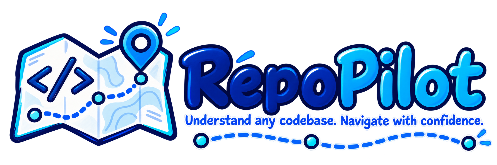

RepoPilot
自动探索项目结构、梳理技术架构、追踪业务链路，并按照真实开发流程指导新人上手的 AI Skill
安装
npx skills add resinya/RepoPilot --global --skill repo-pilot --yes --copy装完后开一个新会话，直接对 agent 说话即可。若不装到全局，去掉 --global 就会装进当前项目。
它做什么
项目地图
先建一张可导航的地图，而不是把整个仓库解释一遍。职责标注来自真实引用关系，不从目录名臆测。
架构与链路
识别分层与外部依赖边界，再从入口沿调用链一路走到数据落地，每个结论带文件路径锚点。
上手路径
给出可执行的下一步动作，含 Windows 与 Linux 差异，而不是描述性的架构说明。
试试这样说
帮我把这个仓库跑起来，告诉我每一步和可能卡住的地方。帮我理清这个项目的架构，先给我一张地图。我是新接手的人，告诉我按什么顺序看这份代码。这条下单链路从哪里进、到哪里结束，中间有哪些分支。
为什么文档站不会被一起装走
Skill 本体只放在仓库的 skills/ 目录下。skills CLI 会先扫描、再只拷贝命中的那一个子目录，
所以本站源码永远不会被写进你的 agent 目录。仓库根也不会放 SKILL.md，避免遮蔽正式入口。